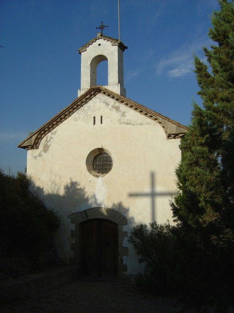
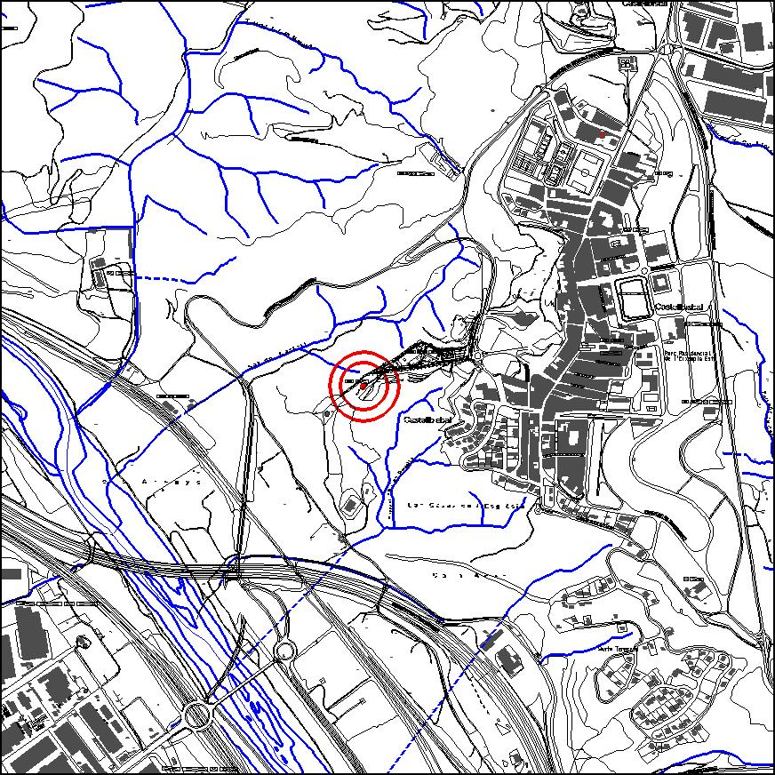

|  |  |
Nom de l’element: Ermita de Sant Vinenç
Clau d’identificació: B.01
Nucli o indret: c/ Serrat de les Garses.
UTM: X= 414.403, Y= 4.592.085, 135 msnm.
Règim del sòl: sòl no urbanitzable.
1.1. Època de construcció i tipologia:
Ermita de planta rectangular amb absis poligonal, d’una sola nau documentada del segle X i construïda al damunt del penya-segat del Serrat de les Garses. La seva coberta és a dues aigües i feta de teula, i presenta un campanar d’espadanya. La porta està emmarcada per un arc rebaixat amb dovelles i brancals de pedra. Els murs són de mamposteria. Va ser l’església parroquial entre el 1167 i el 1592. La van reedificar al 1771 i l’espadanya fou afegida al 1964. En aquest indret existia el castell d’on va sorgir la vil·la de Castellbisbal. Al 1899 un llamp la va ensorrar i va romandre així 5 anys, fins que fou reconstruïda amb els diners dels veïns. A l’any 1962, per la vigília de Sant Vicenç, un altre llamp va causar-ne desperfectes.
1.2. Estat de conservació:
En general és bo. Els forjats i les voltes presenten un estat de conservació mitjà; mentre que les estructures portants, les cobertes, la façana, el paviment, les obertures i els acabats interiors es troben en bon estat. No presenta humitats.
1.3. Ús actual:
Religiós.
1.4. Accés:
Accés fàcil des del carrer Estació.
Conjunt de l’ermita i el castell a partir del qual es va iniciar la vila de Castellbisbal.
3.1. Usos admesos:
Ús religiós. Recreatiu cultural i social.
3.2. Condicions d’ordenació:
Segons Pla Especial a redactar.
3.3. Accés i serveis:
Accés fàcil des del carrer Estació.
BCIL (Bé Cultural d’Interès Local)